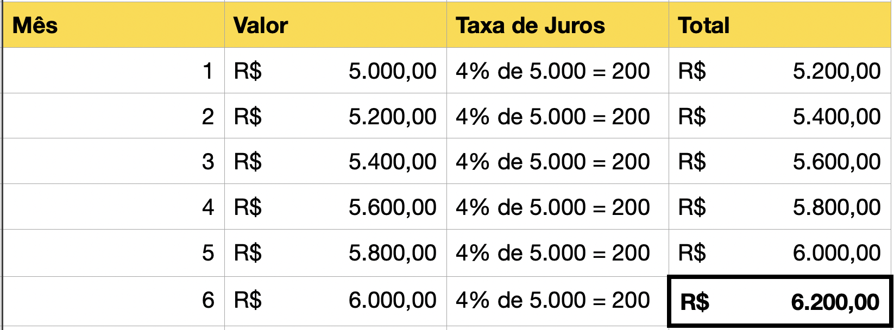

Para calcular o montande total de uma rentabilidade com base em juros simples, basta informar nos campos o valor incial, taxa de juros a ser considerada e período da aplicação.
O quado abaixo mostra mais detalhes do cálculo realizado pelo sistema. Considerando o valor inicial de R$ 5.000,00, em um período de 6 mêses, com juros de 4%:
